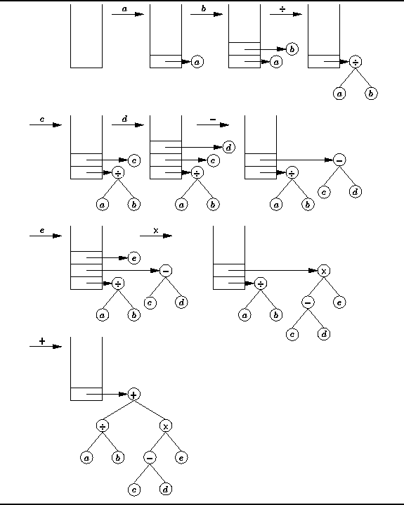

Data Structures and Algorithms
with Object-Oriented Design Patterns in C++
Data Structures and Algorithms
with Object-Oriented Design Patterns in C++
Section  shows how a stack can be used
to compute the value of a postfix expression such as
shows how a stack can be used
to compute the value of a postfix expression such as
Suppose instead of evaluating the expression we are interested
in constructing the corresponding expression tree.
Once we have an expression tree,
we can use the methods described in Section
to print out the expression in prefix or infix notation.
Thus, we have a means for translating expressions from
one notation to another.
It turns out that an expression tree can be constructed from the postfix expression relatively easily. The algorithm to do this is a modified version of the algorithm for evaluating the expression. The symbols in the postfix expression are processed from left to right as follows:
illustrates the use of a stack
to construct the expression tree from the postfix expression
given in Equation .

Figure: Postfix to Infix Conversion using a Stack of Trees
 Copyright © 1997 by Bruno R. Preiss, P.Eng. All rights reserved.
Copyright © 1997 by Bruno R. Preiss, P.Eng. All rights reserved.